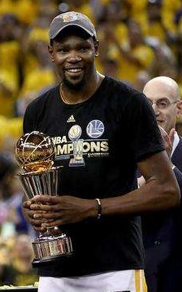

Oklahoma City
Thunder
Kevin Durnat, Russel Westbrook, James Harden
Big3
KD
Westbrook
Harden, Ibaka, Adams
Oklahoma City
Thunder
Kevin Durnat, Russel Westbrook, James Harden
Big3
Westbrook
Harden, Ibaka, Adams
杜兰特绝对拥有绝佳的身体天赋，他拥有211cm身高及228cm的臂展。杜兰特的手臂每个赛季都在变粗。已经不惧怕任何身体对抗了，并且常常在身体失去平衡的情况下命中投篮或是上篮，有时甚至隔着7尺大个完成扣篮。他的控球技术异常娴熟，迅捷的交叉变相，转身，急停跳投等动作只有在后卫身上能见到。投篮手感极好，可以在场地任何地方得分，没有人能够封盖他的跳投。控卫级别的组织能力和传球意识，能够一人盘活全队进攻。篮板拼抢积极，特别是进攻篮板。控球能力在这个身高绝属罕见。
拉塞尔·威斯布鲁克身体素质好，运动能力超强，不是以传球为主的控卫，擅长直线型突破，爆发力惊人，步伐大，腾空高度足，面对高强度防守，尽管篮下终结能力不算高效，但能够制造大量杀伤，依靠罚球得分。威斯布鲁克喜欢干拔跳投，在近筐附近缺少有效的得分手段。虽然威斯布鲁克能抢篮板、抢断能力也不错，但他的防守评价很一般，他的防守注意力有问题，无球防守时会丢人，让对手轻易的空切或投三分，需要队友帮忙补防。
詹姆斯·哈登身体强壮，脚步灵活善于突破，喜欢用后撤步跳投而非后仰。整体看哈登是不错的投手，在中距离的跳投表现一般。哈登最强势的是突破，他拥有马努·吉诺比利之外最好的欧洲步，能在对抗中完成出手，又能聪明的制造身体接触，在突破时主动接触对手以获得哨声。哈登在防守无球有球时会走神，让对手很轻松空切上篮。哈登在精力集中时能做好有球防守，擅长在对手突破过程中掏球抢断。
2016年7月4日，杜兰特与金州勇士签下一份为期2年，总价值5430万的合同，其中第二年为球员选项.
2017年6月5日，勇士在主场以132-113击败骑士。凯文·杜兰特本场比赛上半场得到了3个抢断3个盖帽。他也成为了近11年来首位在上半场得到至少3个抢断和3个盖帽的球员。凯文·杜兰特全场出场41分钟，22投13中，三分球8投4中，得到33分13篮板6助攻3抢断5盖帽。杜兰特也成为了历史上第三位职业生涯前7场总决赛均至少得到25分的球员。杜兰特也加入哈基姆·奥拉朱旺、蒂姆·邓肯，成为自1960年以来总决赛历史上仅有的三位砍下得分30+篮板10+助攻5+的球员。加上这13个篮板，杜兰特季后赛篮板数累计达到829个，超过犹多尼斯·哈斯勒姆，前NBA球员Red Kerr，升至历史第63位。加上这3次抢断，杜兰特季后赛抢断数累计达到109个，超过布鲁斯·鲍文，追平泰肖恩·普林斯，升至历史第87位。加上这5次盖帽，杜兰特季后赛生涯盖帽数累计达到123个，超过马克·韦斯特（Mark West），升至历史第51位。加上这6次助攻，杜兰特季后赛生涯助攻数累计达到391个，超过拜伦·斯科特，罗德·斯特里克兰，升至历史第73位。
2017年6月13日，勇士回到主场和骑士展开总决赛第五场较量，最终他们以129-120击败对手，总比分4-1骑士，夺取2016-17赛季NBA总冠军。杜兰特在生涯第10个赛季终于收获生涯首冠，并凭借出色表现夺取总决赛MVP。杜兰特成为了历史上第三位得到过4次得分王和1次总冠军的球员，他也是历史上第三位第一年加入球队就得到FMVP的球员。杜兰特出场40分钟，20投14中，三分球8投5中，罚球6罚6中，得到39分7篮板5助攻。加上这39分，杜兰特季后赛生涯得分累计达到3048分，超过马努·吉诺比利，詹姆斯·沃西，升至历史第24位。加上这6记罚球，杜兰特季后赛生涯罚球命中数累计达到774个，超过斯科蒂·皮蓬，雷吉·米勒，升至历史第18位。加上这5记三分，杜兰特季后赛生涯三分命中数累计达到222个，超过杰森·特里，升至历史第14位。加上这5次助攻，杜兰特季后赛生涯助攻数累计达到404个，暂列历史第69位。杜兰特成为了联盟自2000年的沙奎尔·奥尼尔后第一位在总决赛连续5场比赛得到至少30分的球员，他也成为了自埃尔金·贝勒、里克·巴里、迈克尔·乔丹和奥尼尔后首位在一次总决赛的前5场比赛均得到至少30分的球员。杜兰特个人总决赛生涯前10场比赛的得分均超过了25分，他也是历史上第三位做到的球员。
Harden Left Durant & Westbrook
Russel Westbrook
Fighting alone
Harden become the leader of Rockets